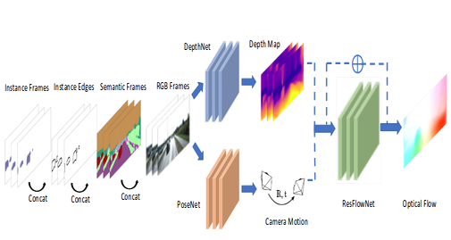
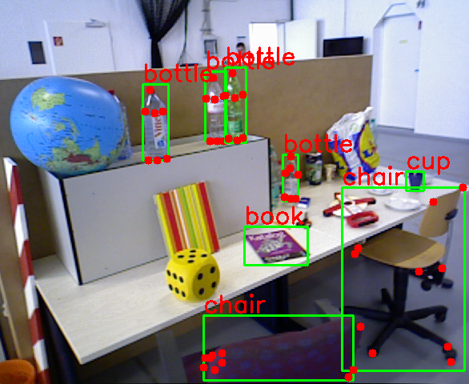
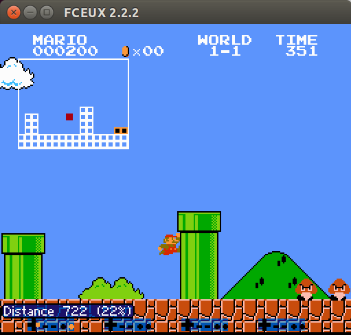
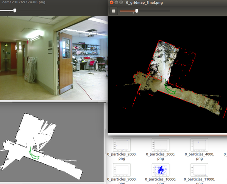
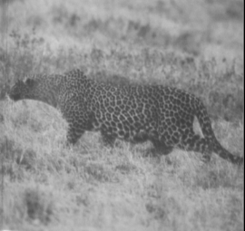

Projects
|  | Semantic Aided Geometry Perception“SIGNet: Semantic Instance Aided Unsupervised 3D Geometry Perception” by Y. Meng, Y. Lu, A. Raj, S. Sunarjo, R. Guo, T. Javidi, G. Bansal and D. Bharadia. [pdf] This paper introduces SIGNet, a novel framework that provides robust geometry perception without requiring geometrically informative labels. SIGNet is shown to improve upon the state of art unsupervised learning for geometry perception by 30% |
 |
Dense Spatial Segmentation“Dense Spatial Segmentation from Sparse Semantic Information” by Q. Feng, Y. Meng, and N. Atanasov. Presented in RSS2018 workshop: Learning and Inference in Robotics(LAIR) [pdf] This paper develops an environment representation that affords reasoning about the occupancy of space, necessary for safe navigation, and about the identity of objects, necessary for complex task interpretation. |
|  | Yolokey: Object detection and keypoint detectionAn tensorflow implementation of stacked hourglass network to detect category-specific keypoint and thanks to the yolo-ros package. |
|  | Mario RL: Playing Super Mario in policy gradient methodThe project is for CSE253 Neural Networks for Pattern Recognition Screenshot of the live game |
|  | CamOILi: Camera Inertial LiDAR Particle Filter SLAMIf we have RGB camera, IMU and 2D-LiDAR, can our robot perceive the world? The project is for ECE276A Sensing & Estimation in Robotics Raw image, log-odds occupancy grid map and 2D-reconstruction |
|  | Cheetah: Foreground SegmentationGiven training set of foreground/background, how to locate the cheetah in pixel-level? The project is for ECE271A Statistical Learning I |